Verified Feature Directory
A transparent, unembellished inventory of capabilities across the 12 domains of UTTAKALA OS. Click any screenshot or "Inspect UI" trigger to examine full-resolution application interfaces.

Mission Command Tactical HUD
High-signal morning command canvas showing active habit telemetry, primary focus milestone, routine checklist, and launchpad bookmarks.

60-Day Mastery Matrix
Visual completion heatmaps evaluating consistency over two full calendar months without punitive streak-breaking penalties.
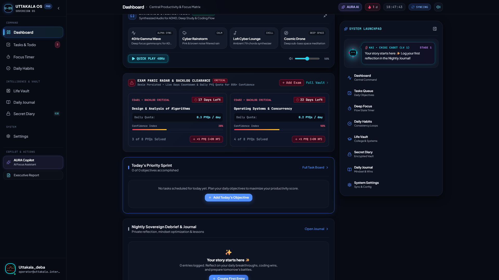
Launchpad Dock & Mascot
Persistent quick-action dock providing keyboard-friendly shortcuts to every sub-vault alongside interactive system assistance.
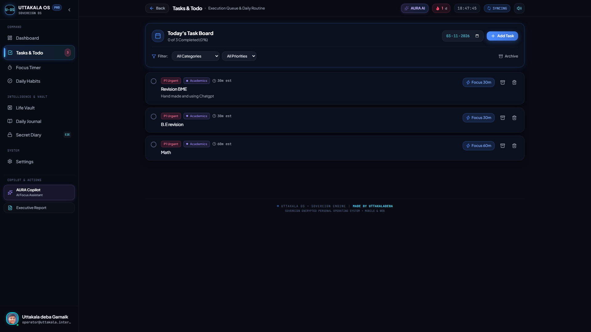
Daily Mission Tasks Manager
Clean, low-friction priority allocation interface for capturing immediate action items, tagging domains, and executing deliverables.

High-Performance Focus Timer
Distraction-free countdown engine featuring Pomodoro and continuous Flow state modes with minimal visual overhead.
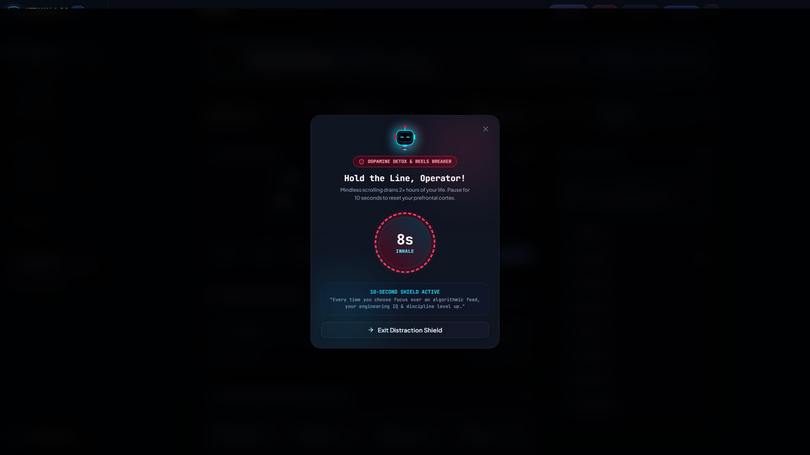
10-Second Urge Breaker
Tactical breathing pause tool engineered to disrupt impulsive habit loops and prevent compulsive digital distraction.
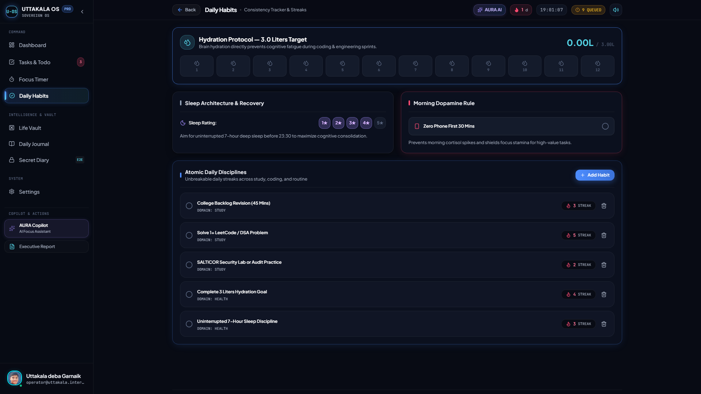
Habits & Health Telemetry
Daily habit adherence checklists paired with physical wellbeing trackers for hydration, rest, and workout metrics.

Academic Backlog Vault
University course registrar with syllabus completion bars, backlog clearance dates, and attendance percentage calculators.

LeetCode & Mistake Vault
Dedicated tracker for software engineers logging algorithmic challenges, mistake explanations, and optimal time-space bounds.
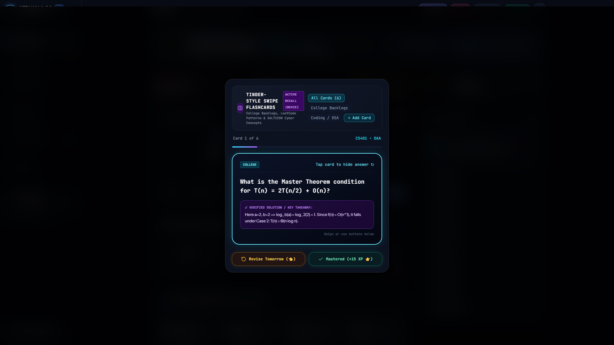
Spaced Flashcards Deck
Fluid gesture-based spaced repetition cards designed to solidify algorithmic patterns and core technical formulas.

SALTICOR Security Gateway
Device telemetry audit panel displaying session parameters, active sandbox allocations, and cryptographic verification states.
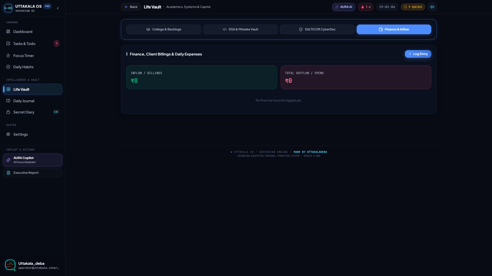
Personal Finance Vault
Private expense ledger to record day-to-day spending and manage budget thresholds without connecting invasive banking APIs.
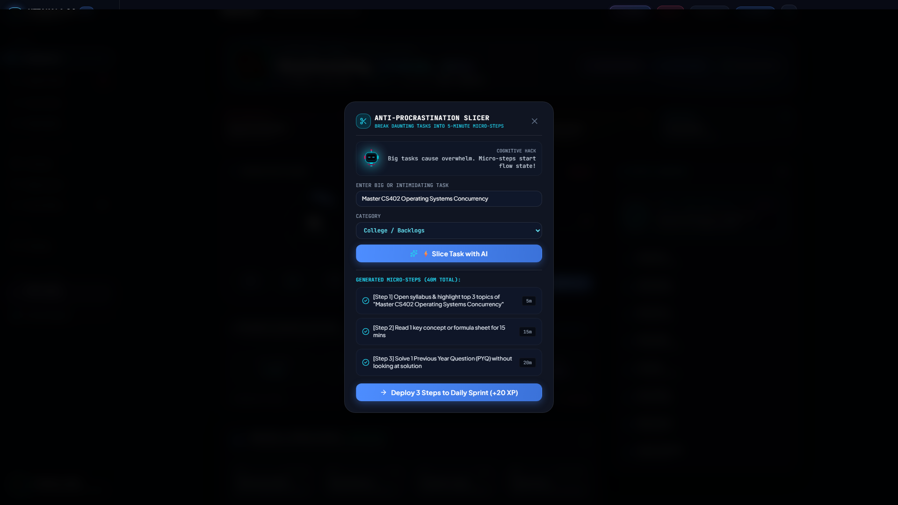
AI Task Slicer Modal
Instant breakdown assistant that ingests large, ambiguous goals and generates sequentially ordered 15-minute action steps.
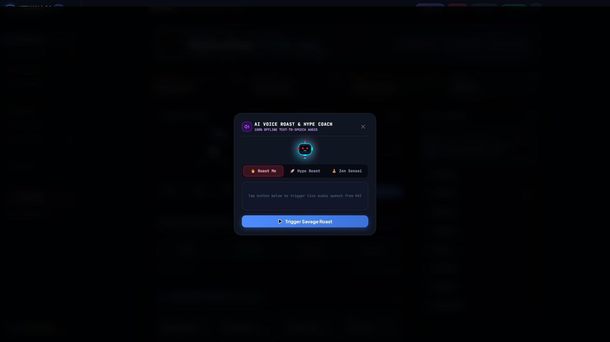
Voice Coach Persona Engine
Adaptive auditory companion providing customized focus cues and performance check-ins based on active user energy levels.
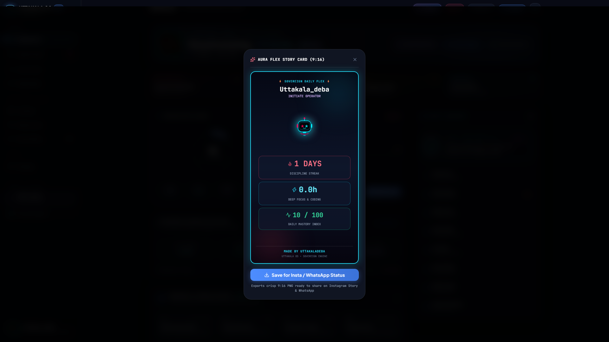
Aura Flex Story Generator
Synthesize discipline milestones, attendance streaks, and solved LeetCode challenges into aesthetic story cards.
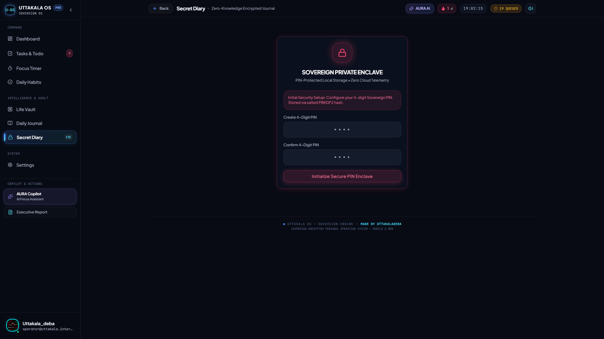
Secret Diary PIN Lockscreen
Dedicated client-side PIN entry barrier guarding your private reflections from unauthorized casual onlookers on shared devices.

Local-Only Writing Enclave
Isolated writing sandbox that persists strictly in local client storage. Excluded from Supabase database sync and Drive backups.
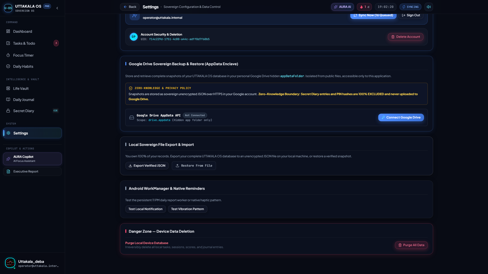
Google Drive AppData Backup
User-authorized export mechanism that saves application state JSON files directly to your hidden Google Drive AppData folder.
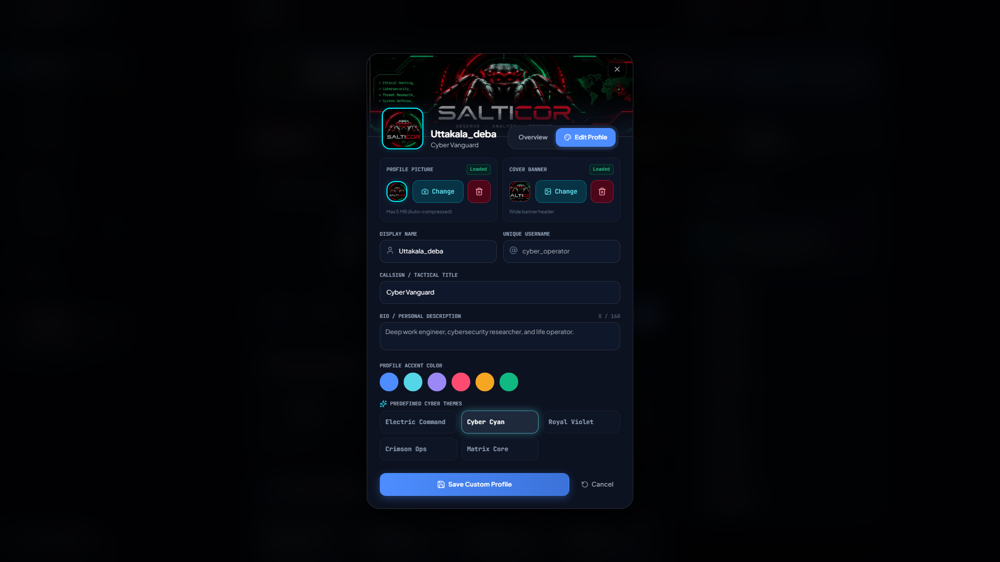
Operator Profile Matrix
Personalize your callsign, dark HUD accent themes, tactical sound effects, and user authentication tokens.
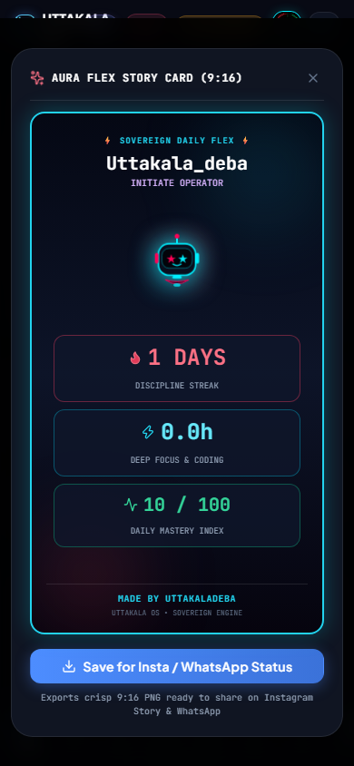
Mobile Responsive Dock
Compact mobile view engineered for one-handed operation with tactile thumb navigation and offline database persistence.
Real Multi-Page PDF & DOCX Export
Genuine binary multi-page PDF generation via jsPDF and AutoTable. Includes running headers, confidentiality footers with page numbering, and structured tables for tasks, focus, and habits.
Inactivity Email Notifications
Automated daily pg_cron dispatcher with user opt-in controls (7, 14, or 30 days) and privacy-first HTML email reminders to help you sustain long-term consistency.
The Secret Diary is segregated from the rest of the application. It persists exclusively in your device's browser sandbox and is deliberately excluded from Supabase synchronization tables and Google Drive JSON backups. No cloud system has visibility into your diary.
Want to see these tools in operation?
Visit our visual walkthrough center to see animated demonstrations and step-by-step operator guides.